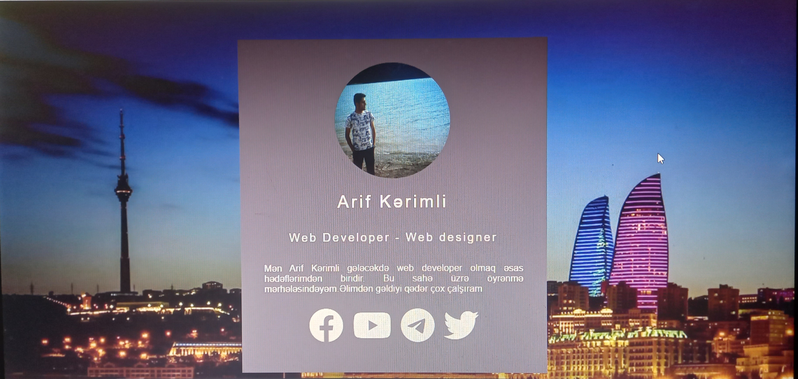
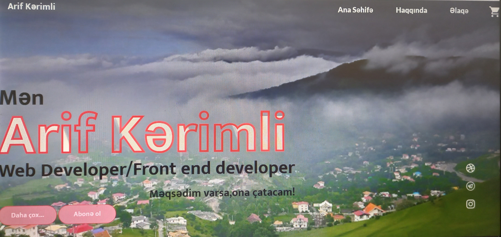
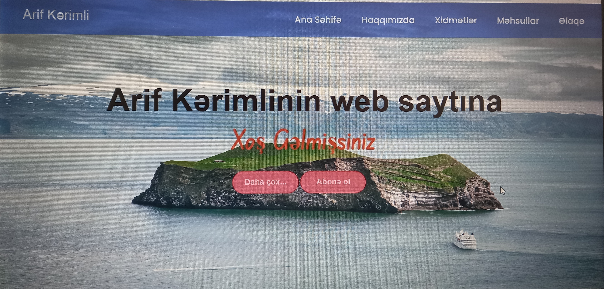

HTML,CSS,JavaScript
Günümüzdə HTML,CSS,JavaScript yani Front-end Developer sahəsi inkşaf etməkdədir.Artıq bu sahə ilə maraqlananlar,bu sahə üzrə çalışanlar çoxdur və getdikcə çoxalır.Yəni bu sahə indinin və gələcəyin sahəsidir.
Aşağıda bu sahələr üzrə ətraflı məlumat verilmişdir.
HTML
HTML (ing. Hypertext Markup Language) — brauzerin oxuya biləcəyi hər hansı sənədi və ya səhifəni yaratmaq üçün xüsusi hipermətn dilidir. HTML internetin fundamental baza texnologiyasıdır və veb-səhifənin növünü, funksiyasını təyin edən diskriptorlar əsasında yaradılmış dildir.
Bütün veb-qovşaqlarda toplanmış və internetə qoşulmuş kompüterlərin ekranlarında göstərilən sənədlər HTML proqram kodunda yazılırlar. HTML – səhifələrdə mətn bloklarının, təsvirlərin yerləşdirilməsinə, cədvəllərin qurulmasına, sənədin və sənəddəki mətnin rənglərinin seçilməsinə, multimediya elementlərinin əlavə edilməsinə, hiperistinadların və bütün bu elementlər arasında əlaqələrin yaradılmasına imkan verir.
Hipermətn koduna malik olan fayllar (.htm) və (.html) genişləndirməsi ilə göstərilir.
CSS
CSS (ing. Cascading Style Sheets) — sənədin xarici görünüşünün, işarələmə dilinin istifadəsi ilə yazılmış, formal təsvir dili. Adətən HTML və XHTML işarələmə dillərində yazılmış veb-səhifələrin təsviri və tərtibatı üçün istifadə edilir, lakin istənilən digər XML sənədlərə, məsələn, SVG və ya XUL-a da tətbiq edilə bilər.
Bu işləri standart üsulla da yerinə yetirmək olar, yəni HTML dilində hər bir abzası ayrıca əmrlər yığımı ilə təsvir etmək mümkündür. Bu halda proqramın yazılması prosesi həddən artıq çətinləşəcək, sənədin ölçüsü isə çox böyük olacaq. Bu işi sadələşdirmək üçün səhifələrə CSS standartında yerinə yetirilmiş xarici fayl qoşulur və həmin faylda istifadə olunmuş xüsusi makrodil vasitəsilə səhifə birdəfəlik formatlaşdırılır. Başqa sözlə, CSS faylı burada şablon kimi istifadə edilir ki, onun köməyilə HTML sənədlərində mətnlər, cədvəllər və digər elementlər formatlaşdırılır. CSS standartından heç bir məhdudiyyət qoyulmadan istənilən serverdə istifadə etmək olar.
CSS kodları, HTML kodlarının içinə yazıla bildiyi kimi xarici bir CSS faylı yaradılaraq da əməliyyat yaradıla bilir.
CSS kodlarının HTML faylına əlavə olunması üç fərqli şəkildə icra edilə bilər.
CSS standartında faylların formatı .css şəklindədir.
JavaScript
JavaScript – internet səhifələrin yaradılmasında geniş istifadə olunan proqramlaşdırma dilidir.
JavaScript müxtəlif dilllərdən ilhamlanaraq yaradılmışdır. 1995-ci ilə Brendan Eyx tərəfindən yazılmışdır. JavaScript Obyekt Yönümlü Proqramlaşdırma (OYP) dilidir. Obyektə Yönümlü Proqramlaşdırma mövzusu kifayət qədər mürəkkəb proqramlaşdırmadır. JavaScript Netscape Navigator 2.0 ilə birlikdə Brendan Eich tərəfindən inkişaf etdirilən və əvvəllər Mocha sonralar LiveScript olaraq adlandırılan və sonda bu anki adını alan JavaScript dili başlanğıcda sadəcə müştəri tərəfindən (client-side) şərh edilən bir proqramlaşdırma dilidir.
Günümüzdə NodeJS texnologiyası ilə server tərəfli də (server-side) şərh edilən proqramlama dili halına gəldi.
Front-end Developer nədir? Necə olmaq?
Veb proqramlaşdırmada, "front end" və "back end" ən çox xatırlanan terminlər arasındadırlar. Bu iki termini əslində "veb development" da adlandırmaq olar. Terminlər bu sahədən kənarda olanları tez-tez çaşdırsa da, onların arasındakı fərqi izah etmək əslində asandır.
Misal: Veb-sayt yaradılması şəkil və məzmunla bağlı bütün vizual, audio hissələrini əhatə edən bir prosesdir. Veb saytlara daxil olduğunuz zaman qarşılaşdığınız rəngarəng mövzular, fonlar, şriftlər, dizayn şəkilləri və bunları istifadəçilərin diqqətinə çatdırmaq üçün uyğunlaşdırmaq, səhifəyə yerləşdirmək kimi proseslərə front-end deyilir.
Yuxarıda sadalanan işi görən şəxslərə front-end developerlər deyilir. Veb saytı yaradılması hadisəni kamera qarşısında və kamera arxasından ibarət film çəkilişi kimi təsəvvür etmək olar. Kameranın qarşısındakı proseslərə “Front-end”, kamera arxasındakı proseslərə isə “Back-end” kimi yaşamaq olar. Filmdə tamaşaçı kimi gördüyümüz hər şey kamera qarşısında; Aktyorlar, çəkiliş yerləri, hadisələrə front-end nümunələri kimi baxmaq olar. Kamera arxasındakı texniki qruplar və avadanlıqlar isə “Back-end” nümunələridir.
“Front-end Developer” olmaq üçün bu işlə bağlı bəzi terminləri yaxşı bilməli və bəzi biliklərə sahib olmaq lazımdır. Buna görə də oxuduğunuz məqalə bu sahəyə sıfırdan başlamaq istəyən şəxslər üçün xüsusilə vacibdir. Biz özümüzü istifadəçi hesab etdikdə bilməliyik ki, saytlarda rastlaşdığımız və səhifələrdə diqqətimizi çəkən bütün fəaliyyətlər əvvəldən axıra qədər son dərəcə incə və uzun proseslər nəticəsində əldə edilir. Aydındır ki, dizaynlara başlamazdan əvvəl göstərilən səy, dizaynların yaradılması prosesindən daha genişdir. Elə bu səbəbdən, başlamazdan əvvəl aparılacaq tədqiqatların təfərrüatlı və çoxşaxəli olmasına diqqət yetirilməlidir.

Front-end Devloper
Layihələrim
Aşağıda hazırladığım layihələrin üz dizaynı verilmişdir.

Şəxsi web sayt layihəsi
HTML,CSS vasitəsilə az kod yazaraq,möhtəşəm layihələr,Hər hansı web saytın üz dizaynını yarada bilərsiniz.

HTML və CSS vasitəsilə hazırlanmış web sayt.(Qısa Layihə)
HTML,CSS vasitəsilə az kod yazaraq,möhtəşəm layihələr,Hər hansı web saytın üz dizaynını yarada bilərsiniz.

HTML və CSS vasitəsilə hazırlanmış web sayt.(Qısa Layihə)
HTML,CSS vasitəsilə az kod yazaraq,möhtəşəm layihələr,Hər hansı web saytın üz dizaynını yarada bilərsiniz.
Front-end Developer nə edir?
“Front-end” developer üç əsas proqramlaşdırma dili olan “HTML”, “CSS” və “JavaScript”-dən istifadə edən, qeyd etdiyimiz veb istifadəçilərinin qarşılaşdıqları ilk səhifənin bütün dizaynlarını və yaradılmasını həyata keçirə bilən şəxsdir.
“Front-end”-in öz bölmələri var. Məsələn, mətnlərə, şəkillərə aid redaktələr; Şəklin şrifti, rəngi, görünüşü, ölçüsü və fonu kimi mövzuları ehtiva edir. Bundan başqa, mətnlərin və şəkillərin səhifədə yerləşdirilməsi və səhifənin strukturlaşdırılması ilə bağlı məsələlər başqa bir alt bölmədir. Bu alt bölmə ilə məşğul olmaq istəyirsinizsə, “JavaScript” dilini bilmək kifayətdir. Başqa interfeyslərdən istifadə etmək lazım deyil. Ancaq mətn və şəkillər yaratmaq niyyətindəsinizsə hər üç dili bilməlisiniz. Front Endçi kimi işləmək niyyətindəsinizsə bir dildə ixtisaslaşmağınız kifayət edər.

Mən Arif Kərimli... Gələcəkdə Web developer olmaq əsas hədəflərimdən biridir...Back-end developer,Front-end developer və Full-stack developer sahələri üzrə maraqlanıram... Bu sahə üzrə öyrənmə mərhələsindəyəm...Əlimdən gəldiyi qədər çox çalşıram
Arif Kərimli